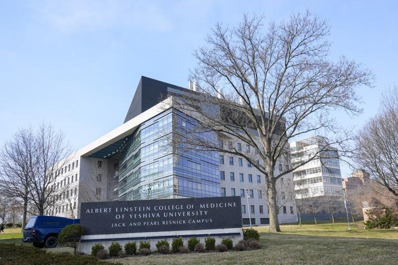
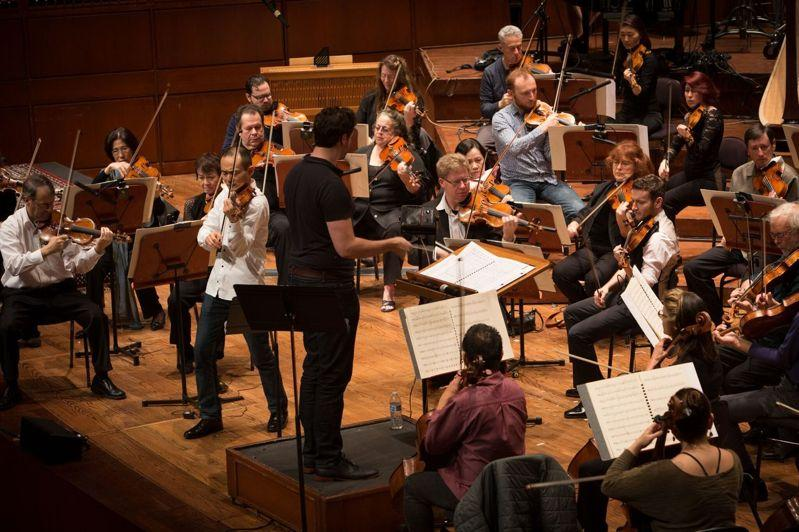

据CNBC的全美最昂贵大学排名，最贵的10所大学四年学费加总起来都在40余万美元以上，绝大多数家庭望之却步；不过，读书并非有钱人的专利，许多大学完全免学费、或者提供「免学费方案」(tuition free program)，让清寒学生仍有机会接受高等教育、翻转人生。
全美大学学费愈来愈贵，但另一方面，免学费的机会也愈来愈多。大学搜索网站bestcolleges.com今年6月贴文介绍全美30多州免费上大学教育方案，甚至常春藤名校也开善门，让低收入却表现不凡的学生免学费就读。
据BestColleges调查，提供免学费方案的多数大学都针对低收入家庭学生、美国原住民学生、劳力短缺领域攻读学位的学生免除学杂费，缩小财力对学习机会影响的差距。
新墨州 创建信托基金
新墨西哥州最近更创建全州最大的高等教育信托基金，坚守所有居民免大学学费的承诺；州府设有「机会奖学金」(Opportunity Scholarship)和「彩票奖学金」(Lottery Scholarship)，向全州居民和高中应届毕业生开放。
普林斯顿大学(Princeton University)、哈佛大学(Harvard University)和耶鲁大学(Yale University)等常春藤盟校也为低收入家庭学生提供免费大学教育，规定不一。
低收入家庭 藤校优惠
金融网站lendingtree.com列出各常春藤大学的免费方案。以哈佛大学为例，拥有强大的财政援助计划，家庭年收入低于7万5000美元就可免费修大学课程，食宿和杂费全免；另外也提供许多奖助学金，该校称，22%以上家庭的孩子免费就读，55%获得基于需求的奖学金。
被粘贴「最贵大学」标签的哥伦比亚大学也慷慨协助清寒学生；如果学生来自年收入低于6万6000美元的家庭，家长自掏腰包的金额为0，如果家庭年收入低于15万美元，哥伦比亚大学将承担学费。
部分医学院 不用学费
此外，想要从事健康专业的学生可以选读免学费和完全免费的医学院和免学费护理学校；BestCollege列出选读大方提供免学费方案的医疗领域大学，包括位于密西根州的The University of Olivet、位于纽约市的私立医学院The Albert Einstein College of Medicine(爱因斯坦医学院)。
BestCollege针对全美30多州一一列出提供免学费方案的学校，可点击各州查找。
以纽约州为例，「精益求精奖助学金」(The Excelsior Scholarship program)为纽约州立大学(SUNY)或纽约市立大学(CUNY)提供免学费方案，基本上，学费扣除联邦、州奖助学金之后的部分就由该方案负担，每年最高金额5500美元。学生全年须修课达30个学分且成绩及格，才能续领取这一笔奖助学金。

这些大学 学费全免
「美国新闻与世界报导」(U.S. News & World Report)列出全美18所大学完全免学费，条件是在校工读、或者毕业后接受就业安排；不包括社区大学。不过，许多免学费大学仍收取食宿费和其他杂费。这些学费全免的大学包括：
Alice Lloyd College(肯塔基州)：肯塔基州、俄亥俄州、田纳西州、维吉尼亚州和西维吉尼亚州108个郡居民有资格该校奖学金Appalachian Leaders Scholarship，最多足以支付10个学期学费；不过，学生须通过学生工作计划每周至少工作10小时，从事维护、食品准备和办公室行政工作。
Antioch College(俄亥俄州)：符合联邦佩尔助学金资格的学生学费全免，但在某些情况下，食宿费用自付，学生平均成绩GPA须保持至少2.0。
The Apprentice School(学徒学校，维吉尼亚州)：属于职校，有100多年历史，提供各种造船业课程和全职工作，完全不收学费，不仅如此，学生还赚时薪、享福利。典型学习期持续四至五年，学生毕业时将获证书和产业应用科学副学士学位(associate of applied science degree)。

Curtis Institute of Music(柯蒂斯音乐学院，宾州)：这是全球知名音乐学院，杰出校友包括华裔钢琴家郎朗、刘孟捷等人，必须通过甄试才能入学。自1928年以来一直为全球每一位大学部学生、研究生免除学费，学生只须支付3500美元杂费，包括教科书费、网络费、录音费、健康服务费和设施使用费、医疗服务和医疗保险等费用。
United States Coast Guard Academy(美国海岸警卫队学院，康州)：这所学校的学生也称为学员，其学费、食宿费全免，研究生需服务五年，但根据校方网站，85%毕业生决定服务更长时间。求学期间不仅免学费，还可领薪。
以及Barclay College(堪萨斯州)、Berea College(肯塔基州)、College of the Ozarks(密苏里州)、Deep Springs College(加州)、Haskell Indian Nations University(堪萨斯州)、United States Air Force Academy(科罗拉多州)、United States Merchant Marine Academy(纽约州)、United States Military Academy(纽约州)、United States Naval Academy(马里兰州)、University of New Hampshire(新罕布夏州)、Warren Wilson College(北卡罗莱纳州)、Webb Institute(纽约州)、Williamson College of the Trades(宾州)。